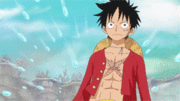
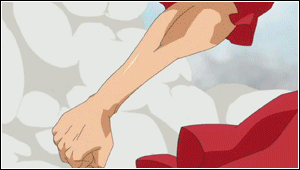

Luffy gained extraordinary stretching and elastic powers from eating the Gomu Gomu no Mi (lit. Rubber Rubber Fruit, Gum-Gum Fruit in the English dub), which is one of the rare and legendary Devil Fruits.

Luffy gained extraordinary stretching and elastic powers from eating the Gomu Gomu no Mi (lit. Rubber Rubber Fruit, Gum-Gum Fruit in the English dub), which is one of the rare and legendary Devil Fruits.
Gear 1 is his base mode. His base strength and speed mixed with the stretching ability.

Luffy uses his legs (Just his hand post-timeskip) as pumps to increase the blood flow in his body, enhancing his speed.

Luffy pumps air through his bones to make them literally gigantic, increasing his attack power.

Luffy puffs up his Muscular Structure giving him more power, while keeping up his flexibility. This seems to be a cross between Gear 2 and 3 while utilizing his Haki.

Haki is a mysterious power that is found in every living being in the world. It is not that different from the typical senses. However, most people do not notice it or fail to awaken it. Broadly speaking, there are two types of Haki available to everyone, given the proper training; however, there is a third type that only a certain group of "chosen ones" are said to possess.
Haoshoku Haki is a rare form of Haki that cannot be attained through training. Only one in several million people have this ability. This type of Haki allows the user to exert their willpower over others.
The most common usage of this Haki allows the user to sense the presence of others even if they are concealed from view or too far to be seen naturally. The user can also use this Haki to predict an opponent's moves shortly before they make them, thereby making the attack much easier to evade with enough skill.
Busoshoku Haki is a form of Haki that allows the user to use their spirit to create, in essence, an invisible armor around themselves.
